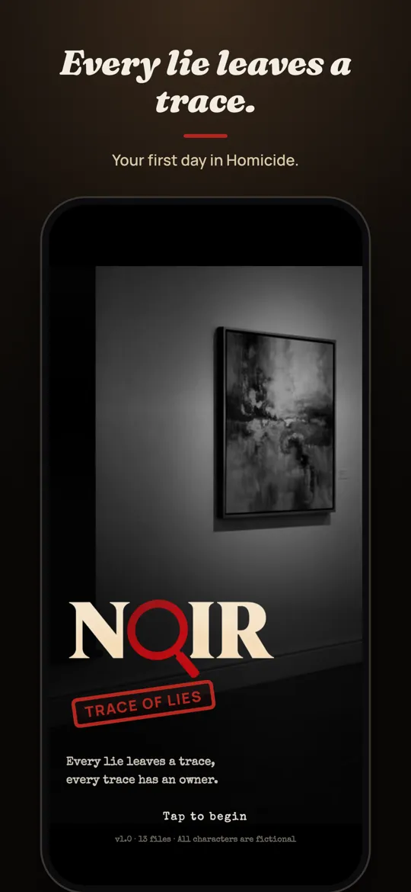
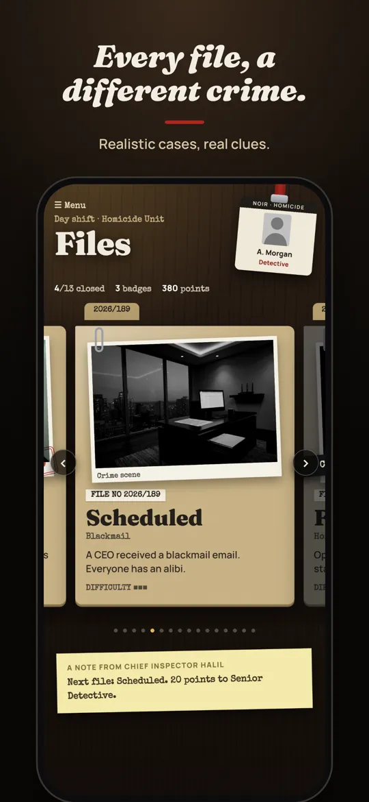
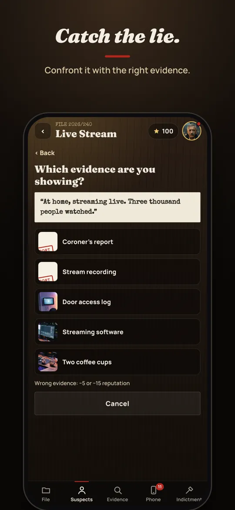
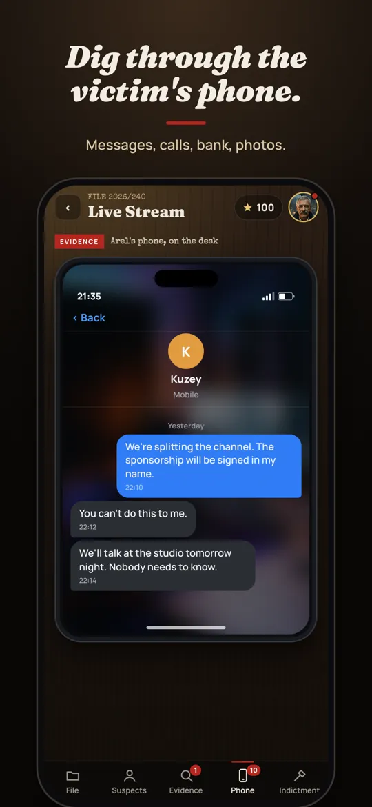
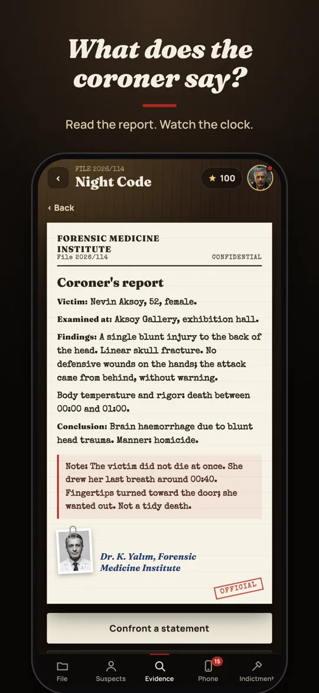

How it works
- Read the fileEvery case starts with a crime scene, statements and a ticking clock.
- Question the suspectsEveryone has an alibi. Somewhere in their story there is a crack.
- Check the phoneMessages, calls, emails, bank activity and photos from the victim's last days.
- Catch the lieConfront a statement with the evidence that breaks it, then name the killer, the method and the motive.
What's inside
- 13 free cases: a gallery murder, a night train, a snowstorm, a live stream, a poisoned glass and more
- A realistic phone in every case, full of hidden clues
- Coroner's reports, camera footage and key card logs
- Hints from your partner when you get stuck
- English and Turkish
- Works offline, no account needed
Questions
What kind of game is Noir?
Noir is a detective and murder mystery game for your phone. You read case files, interrogate suspects, search the victim's phone and prove who is lying. It plays like a whodunit you solve yourself.
Is Noir free?
Yes. 13 cases are free to play. The Red Ribbon, a three-case finale about a serial killer from 2006, is a one-time purchase.
Does it need an internet connection?
No. Noir works offline and you don't need an account.
Is there an Android version?
Not yet, but an Android version is planned.
Which languages does it support?
English and Turkish.
What are good mobile detective games?
If you like reading evidence and catching contradictions, look for games built around interrogation and real clues rather than hidden-object scenes. Noir is made for that: every case can be solved by logic alone.